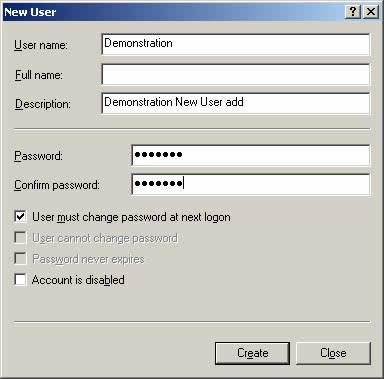

ТЕМА 3: Мерки за повишаване на мрежовата сигурност
Сигурност на операционната система
Защита и възстановяване от сривове
Сигурност на операционната система
Някои операционни системи сами по себе си са по-сигурни от други. Операционните системи с висока сигурност, като Windows NT/2000/2003 и Linux, изискват от вас да въведете валидно потребителско име и парола, за да заредите операционната система и да я използвате. Също така тези операционни системи съхраняват паролите в криптирана форма, до която не може да бъде осъществен лесен достъп.
- Потребители, групи и позволения
Модерните операционни системи позволяват на множество потребители да осъществяват достъп до компютъра и мрежата чрез създаване на отделни потребителски акаунти, и дават възможност за задаване на различна парола за всеки от тях. Въвеждането на комбинацията от потребителско име и парола от промпта за логване води до следния резултат:
- На потребителя се дава достъп до операционната система и мрежата.
- Потребителят може да чете и записва в тези споделени ресурси, за които на неговия акаунт са дадени позволения.
- Потребителят може да упражнява такива права (например правото да изключва операционната система или да инсталира програми), каквито са зададени на неговия акаунт.
- Зареждат се общите настройки за потребителя, като например икони на десктопа и тапет (wallpaper).
В някои компютърни среди, в които на компютрите не се съхраняват конфиденциални данни и няма изисквания за сигурност, може да не се създават отделни потребителски акаунти. Всички потребители могат да използват един и същ акаунт за логване. Това означава, че всеки потребител има едни и същи позволения за достъп. Това създава отворена, необезопасена среда. В повечето бизнес организации е по-добре да се създадат отделни акаунти за различните потребители. Ако неоторизираният достъп не е проблем, паролите могат да бъдат оставени празни.
- Сигурност на паролите
Важна част от всеки план за сигурност на мрежата трябва да включва осигуряване на колкото е възможно по-неразгадаеми пароли. Ако на потребителите се разреши сами да избират своите собствени пароли, трябва да бъдат зададени правила в съответствие с нуждите на сигурността на мрежата.
Ето някои примери за политики на сигурност:
- Паролата не трябва да се записва на хартия. Ако потребителите имат нужда да си записват паролите, значи системата е прекалено сложна, а следователно и неефективна. Първото правило е баланс между надеждност и ефективност.
- Не оставяйте паролите по подразбиране. Много хакерски атаки са били успешни, защото е оставена паролата по подразбиране на някой сървър.
- Трябва да се искат колкото може по-малко пароли. Ако на служителите в компанията се налага да помнят 10 различни пароли - от такива, които пазят наистина важна информация до такива, които на практика не са необходими, те няма да могат да работят ефективно и най-вероятно ще си запишат паролите, излагайки важната информация на риск. Преценете кои системи и приложения реално имат нужда от защита с парола.
- Паролите трябва да се сменят периодично. Колко често да се сменят отново е въпрос на баланс между сигурност и удобство - ако служителите трябва да запомнят новите пароли всяка седмица, те вероятно ще започнат да си записват текущата парола. По-дълъг период - например 90 дни, а не стандартните 30 - ще стимулира използването на по-сложни за запомняне пароли.
- Новите пароли трябва да са нови. Когато потребителят сменя паролата си, тя не трябва да е вариация на старата. Пароли като RandomWORD1, RandomWORD2, RandomWORD3 и т.н. са лесни за отгатване.
- Не използвайте очевидни неща. Паролата трябва да е нещо по-сложно от една дума. Имена, адреси и други данни за потребителя, които могат лесно да се намерят, не трябва да се използват в една парола.
- Паролата трябва да е дълга... но не прекалено дълга. Парола, съдържаща минимум 8 символа, които са малки и големи букви, както и цифри, е едно добро начало. Ако обаче се изисква прекалено дълга парола, потребителите на системата стават мързеливи относно измислянето й и използват неща от рода на ABCDEFG123456789. Минимален и максимален лимит обаче стимулират креативност. Една добра практика е използването на фраза вместо дума. mYd0g1sCALLEDf1d0 със сигурност е много по-надеждно от простото F1do
- Автоматизирайте смяната на паролата. Процесът по смяна на паролите на потребителите трябва да е автоматизиран. Не разчитайте персоналът да помни кога трябва да си смени паролата, каква парола вече са използвали през миналата година и кои думи не бива да се ползват.
- Обучение. Уверете се, че политиката относно паролите е вписана в договора на служителя и че всеки служител я разбира. Ако всичко е направено както трябва, единствената ви грижа ще е служителите да не споделят паролата си с никой и да не я записват никъде. И най-важното е да не се използват едни и същи пароли във и извън корпорацията.
- Поглед в бъдещето. Накрая, имайте предвид съвременните технологии, които вероятно ще заменят паролите - биометричната идентификация и двустепенната автентификация.
Повечето мрежови операционни системи позволяват на администратора да задава такива критерии, като минимална дължина на парола, история на паролите (в която се съхранява списък на предишните пароли на потребителите и не се допуска повторното им използване) и сроковете на годност на паролите (което задължава потребителя да променя паролата на зададени интервали от време). Също така има програми за сигурност на паролите, които дават възможност на администраторите да задават параметри за пароли.
- Политики за контрол на достъпа
Съвременните мрежови операционни системи (NOS) позволяват на администраторите да управляват достъпа до ресурсите на грануларна основа. На всеки отделен потребител може да бьдат дадени точно позволенията, от които се нуждае. С помощта на файлови системи с висока сигурност позволенията могат да бъдат задавани не само за ресурси, до които се осъществява достъп по мрежата, а също и за ресурсите, до които се извършва достъп от самата локална машина. Локалните и мрежовите позволения не е задължително да бьдат едни и същи. Важно е да знаете и да се съобразявате с подразбиращите се позволения, използвани от мрежовата операционна система. Например, при Windows 2003 Server, когато споделите ресурс, той е напълно достъпен за всеки в мрежата, докато не отмените изрично тези позволения. На сървър с NelWare е в сила обратното - споделеният ресурс не е достъпен за никого чак докато изрично не промените позволенията на даден потребител. Нито един от методите не е изцяло правилен или погрешен, но ако не знаете как работят позволенията на вашата мрежова операционна система, може да се окаже, че сте разрешили достъп до ресурси, които не искате да откривате, или пък сте забранили достъпа на потребители, които трябва да имат такъв.
В организация, заинтересувана от прилагане на система за сигурност, трябва да бъдат създадени политики, в които да бъде указано кой трябва да има достъп и до кои ресурси. Най-общо достъпът трябва да бъде предоставян на принципа „трябва да знае". Ако потребителят трябва да има достъп до ресурса, за да изпълнява своите служебни задачи, трябва да бъдат дадени позволения. В противен случай достъпът трябва да бъде отказан.
- Използване на групи на сигурност
Групите на сигурност са създадени в помощ на администраторите и се поддържат от много мрежови операционни системи с цел улесняване на задаването на позволения в голяма мрежа. Създават се групи, и на тези групи се дават позволения за достъп до ресурси. След това в групата се поставят съответните потребителски акаунти, като по този начин на всеки потребител веднага се дават всички позволения, зададени за групата като цяло. Това е по-лесно, отколкото задаването на позволения на всеки потребител поотделно. Например ако някой от отдела по продажби трябва да има достъп до няколко папки (да ги наречем salestats, salesbudget, salestatsmemos), можете да зададете позволения за достъп за всяка папка на до 20 потребителя в отдела. Но по-лесният метод е да създадете група на сигурност, наречена sales, да й дадете позволение за достъп до всичките три папки и да поставите 20 потребителски акаунта в нея. След това, ако създадете нова папка - например salescalendars, до която трябва да има достъп целият отдел - то всичко, което трябва да направите, е да зададете позволения за групата sales. В противен случай ще трябва да зададете позволения за новата папка на 20 различни акаунта. Ако не искате даден потребител да има достъп до определен ресурс, не приемайте, че е достатъчно само да премахнете това позволение от неговия потребителски акаунт. Трябва също да се уверите, че потребителят не е член на никоя група, която има позволения за достъп до ресурса. Освен това, ако операционната система (например Windows 2003) ви позволява конкретно да забраните достъпа, трябва изрично да направите това.

Показаната схема илюстрира как групите улесняват администрирането, като дават възможност за задаване на позволения и права на група от потребители, вместо на отделни потребителски акаунти .
В Windows 2003 server, например, групите представляват съвкупности от потребителски акаунти и за тях е всила следното:
- Членовете получават позволенията, дадени на групата
- Потребителите могат да бъдат членове на множество групи
- Групите могат да бъдат членове на други групи.
Позволенията (permissions) контролират какво могат да правят потребителите с даден ресурс, като папка, файл или принтер. Когато се дават позволения, се разрешава на потребителите да получават достъп до даден ресурс и се дефинира типа на достъпа, който те притежават. Например: ако няколко потребителя трябва да могат да четат от един и същи файл, може да се добавят техните потребителски акаунти към група и след това да даде на групата позволение за четене на файловете. Правата (rights) дават възможност на потребителите да изпълняват системни задачи, например да променят часа на компютъра.
- Сигурност на електронната поща
Много компютърни потребители се радват на измамно чувство за сигурност на мрежовите комуникации като цяло и в частност на съобщенията по електронната поща. Потребителите приемат, че съобщенията, които съставят и изпращат по локалната мрежа или по Интернет, се четат само от получателите, до които са адресирани съобщенията. Потребителите на електронна поща се държат така, сякаш при изпращане на електронна поща очакват същата конфиден-циалност, както при изпращане на писмо по обикновена поща. По-вярното сравнение е, че електронната поща прилича на открита пощенска картичка, която може да бъде прочетена от всеки, който я пренася по време на нейното пътуване от подателя до получателя. Съобщенията от електронната поща са много лесни за прихващане. Те често пътуват през десетки възли (сървъри) по своя път от предаващата до приемащата страна. Дори ако съобщението е изпратено до някой в локалната мрежа, негово копие се съхранява поне на три машини: на компютъра на изпращащия, на компютъра на приемащия и на вътрешния сървър за електронна поща. Електронна поща, изпратена по Интернет, може да премине също през няколко сървъра. Ако не е криптирано или подписано с цифров подпис, съобщението може лесно да бъде прочетено, копирано или променено във всяка една точка по неговия път.
Важен фактор в софтуера за защита на електронната поща е лекотата на използване. Ако потребителите трябва да изпълняват сложни или бавни действия, наред с изпращане и четене на защитената електронна поща, те вероятно изобщо ще се откажат от софтуера за сигурност.
Повечето от софтуера за защита на електронната поща използва криптиране с публични ключове и цифрови подписи за осигуряване на конфиденциалност на данните и автентикация на самоличността.
Криптиране
Криптирането включва конвертиране на данните във форма, която не може лесно да бъде разбрана от другите. Криптирането на файлове е способ за криптиране на данни, съхранявани на диска на компютъра, така че те да не могат да бъдат прочетени от никого, а само от създателя на данните. Някои операционни системи, като Windows 2000/2003/XP/Vista, включват функция за криптиране на файлове. За тези, които не поддържат такава функция (например Windows 9х и Windows NT), са достъпни програми за криптиране от външни производители. Когато документите са криптирани на диска, може да ги разглежда само потребител, който има правилен ключ. Ако други опитат да осъществят достъп, тогава или файлът няма да се отвори изобщо, или ще се появи като объркани безсмислени знакове. Kонфиденциалните данни трябва да бъдат защитени както с позволения за достъп, така и с криптиране.
Криптирането използва код или ключ за разбъркване и след това за подреждане (или дешифрираме) на съобщението, с цел връщането му в неговата първоначална форма.
Колкото по-дълъг е ключът за криптиране, толкова по-трудно е да се разбие кодът. В областта на криптирането 40- и 56-битовото криптиране се нарича стандартно криптиране, а 128-битовото криптиране се нарича силно криптиране.
Два популярни типа криптиране са:
- криптиране със секретен ключ
- криптиране с публичен/частен ключ.
- Криптиране със секретен ключ
Kриптирането със секретен ключ често се означава като симетрично криптиране, защото един ключ се използва както за криптиране, така и за декриптиране на данните. Предаващата и приемащата страни се договарят за използване на общ ключ или криптиращ алгоритъм, който представлява споделена тайна
Популярни алгоритми за криптиране със секретен ключ са Data Encryption Standard (DES) и 3DES (произнасян „трипъл DES"). Друг алгоритъм е RC (Rivest Cipher)-4, създаден от Рон Ривест, който заедно с Ади Шамир и Леонард Адлеман, разработват популярната схема за криптиране с публичен ключ RSA.
При криптирането със секретен ключ има три същностни проблема:
- Генериране на секретни ключове
- Обмен на ключовете между оторизираните страни, без да попадат в ръцете на неоторизирани страни
- Справяне със сложността, характерна за реализиране на сигурност на комуникациите до много различни страни
Благоразумно е да променяме ключовете през определени интервали от време, за да избегнем компрометиране на сигурността. Това означава, че трябва да бъдат генерирани допълнителни ключове. Също така трябва да има начин за получаване на ключа от страната, оторизирана да дешифрира съобщението. Разработени са механизми за сигурно генериране и обмен на ключове. Един пример е алгоритъмът на Дифи-Хелман, който позволява на две страни да създават тайна, известна само на тях, независимо от факта, че комуникират по мрежа без реализирана сигурност.
Третият проблем от горния списък е малко по-проблематичен. По-просто решение е да се използва различен тип криптиране: криптиране с публичен/частен ключ.
- Криптиране с публичен/частен ключ
Макар че за краткост често пъти се означава като криптиране с публичен ключ, по-точният термин е криптиране с публичен/частен ключ (public/private key encryption), тъй като този тип криптиране използва два ключа - единият от тях се публикува и е широко достъпен, а другият е частен и се знае само от потребителя. За извършване на сигурната комуникация са необходими и двата ключа. Този тип криптиране се нарича също асиметрично криптиране. При него всеки потребител има и публичен, и частен ключ, наречени двойка ключове. Ето как работи това:
- Двама потребители обменят своите публични ключове. Няма значение, че това се прави по несигурен начин, защото съобщенията не могат да бъдат дешифрирани само с публичния ключ.
- Изпращащият съобщение го криптира използвайки публичния ключ на получателя. Публичният ключ се асоциира (съответства) само на един частен ключ. За да се декриптира съобщение, което е криптирано с помощта на публичен ключ, е необходим съответстващият му частен ключ. (В сила е и обратното - за да се декриптира съобщение, криптирано с помощта на частен ключ, е необходим съответстващият му публичен ключ).
- Получателят, използвайки своя частен ключ, може да дешифрира съобщението, защото то е криптирано с неговия публичен ключ.
Обърнете внимание, че в този процес на криптиране бяха използвани само ключовете на получателя - - публичен и частен.
За да работи този вид криптиране, трябва да бъдат използвани и двата ключа на една двойка ключове; не е нужно никой да знае частния ключ на някой друг. Един добър начин да разберете този тип криптиране е да си представите двете части информация, необходими за влизане в къща, защитена от ключалка с цифрова комбинация. Ако някой иска да влезе в къщата, той или тя трябва да знае както адреса на улицата, така и цифровата комбинация за отваряне на заключващото устройство. Адресът е публична информация, която се публикува в телефонния указател. Тя е достъпна за всеки, точно како публичният ключ е достъпен на всеки. Комбинацията на ключалката е аналогична на частния ключ на потребителя; тя е позната само на собственика на къщата. За тази конкретна къща и двата ключа са уникални, но единият е направен публичен, докато другият е запазен в тайна.
- Протоколът IP Security
Криптирането на файловете защитава данните, съхранявани на диска, но то не предлага сигурност за данните по време на тяхното пътуване по мрежата. Протоколът IP Security (IPSec) беше разработен като средство за решаване на този проблем. IPSec реализира сигурност на данните на нивото на отделния пакет. Тъй като работи в мрежовия слой на референтния OSI модел, приложенията не го забелязват. Cisco Systems включва поддръжка на IPSec в своите маршрутизатори, a Windows 2000 включва IPSec в своя TCP/IP стек. IPSec използва два протокола:
- Authentication Header (AH) - Позволява проверка на самоличността на изпращащия IPSec
- Encapsulating Security payload (ESP) - гарантира конфиденциалността на самите данни
Тези два протокола могат да бъдат използвани поотделно или заедно.
IPSec може да работи в два режима: транспортен и тунелен. Транспортният режим осигурява сигурност от край до край, т.е. криптирането се извършва от компютъра източник до компютъра местоназначение. Тунелният режим защитава данните от изходната точка на една мрежа до входната точка на друга.
- Secure Sockets Layer (SSL)
SSL е друго средство за управление на сигурността на мрежовите комуникации. Недостатъкът на SSL е, че работи в приложния слой; затова трябва да бъде поддържан от потребителското приложение. SSL беше разработен от Netscape за управление на сигурността на техния Web браузър. Той използва криптиране с публичен и частен ключ. Тези средства са описани в секцията „Как работят компонентите на сигурността" по-нататък в тази глава.
Автентикация
Примерите, които разгледахме дотук, се занимават с конфиденциалността на данните. Отделен проблем е автентикацията на изпращащия данните.
С помощта на метода на публичния/частния ключ можете лесно да реализирате сигурността за самите данни. Но тъй като публичният ключ е достъпен за всеки, получателят не може да знае със сигурност от кого е съобщението, което е приел и което е криптирано с неговия публичен ключ. За да провери истинността на самоличността на изпращащия (да го автентицира) той трябва да криптира съобщението с неговия частен ключ. След това получателят може да го декриптира с публичния ключ на подателя, като е сигурен, че това е истинският подател, защото само той знае собственият си частен ключ.
Друг начин за осигуряване на автентикация на изпращащия е да се използват цифрови подписи.
- Цифрови подписи
Цифровите подписи се състоят от криптирана подписваща информация, добавена към документа. Тази информация верифицира както идентичността на изпращащия, така и целостта на самия документ. Цифровите подписи не криптират данните. Те само гарантират, че данните не са променени и че изпращачът е автентичен.
Алгоритмите с публичен ключ се използват за създаване и верифициране на цифрови подписи и хеш алгоритми.
- Цифрови сертификати
Цифровите сертификати представляват съобщения, които съдържат цифровия подпис на доверена трета страна, наречена сертификационна власт (certificate authority). Третата страна гарантира, че конкретен публичен ключ реално принадлежи на конкретно лице. Сертификатите се използват за гарантиране на автентичността на съобщенията, които пътуват по несигурни публични мрежи, например Интернет.
Потребител, който притежава частния ключ, асоцииран с конкретен публичен ключ, изпраща заявка за сертификат от сертификационната власт. Сертифика-ционната власт отговаря за верифицирането, че този конкретен публичен ключ принадлежи на конкретен потребител. Сертификатите са валидни за зададен период от време и сертификационната власт може да ги анулира (отнема).
- Перспективни технологии за идентификация и автентикация
Идентификацията и автентикацията са важни фактори за сигурността, когато корпоративните мрежи станат по-големи и трябва да поддържат хиляди потребители. Установяването на самоличността на потребител, който се опитва да влезе в мрежата или да осъществи достъп до ресурси на компютъра, е основата на плана за силна система за сигурност.
Независимо от интелигентността на технологиите на криптиране на паролите, проблемът при метода с потребителско име/парола е възможността на неотори-зирана страна, която е разкрила и използва пълномощията (акредитивите) на легитимен потребител. Технологиите на разширена идентификация и автентикация като следващите се опитват да предотвратят това, като базират идентификацията на фактори, които не могат да бъдат фалшифицирани:
- Смарт карти .
- Биометрика, включително разпознаване на пръстови отпечатъци, сканиране на ретината и разпознаване на ириса на окото и верификация на гласа
Макар че тези технологии още не се срещат масово в работното пространство извън държавните агенции, в следващото десетилетие можем да очакваме методите на разширената верификация да станат масово явление и постоянно да нараства тяхната важност за мрежовите администратори, които трябва да са запознати с тяхното реализиране.
Защита и възстановяване от сривове
Външните и вътрешните нарушители не са единствената заплаха за мрежата и данните в нея. Също така могат да възникнат хардуерни повреди, природни бедствия и технически грешки, които също довеждат до опустошителни загуби на важни файлове. Ето защо мерките за защита и възстановяване от сривове са важна част от всяка производствена мрежа.
Защитата срещу катастрофални загуби на данни и възстановяването на данните след такива сривове включва няколко линии на защита:
- Аварийно захранване
- Архивиране на данните
- Отказоустойчивост при дисковете
- Отказоустойчивост на ниво сървъри (клъстериране)